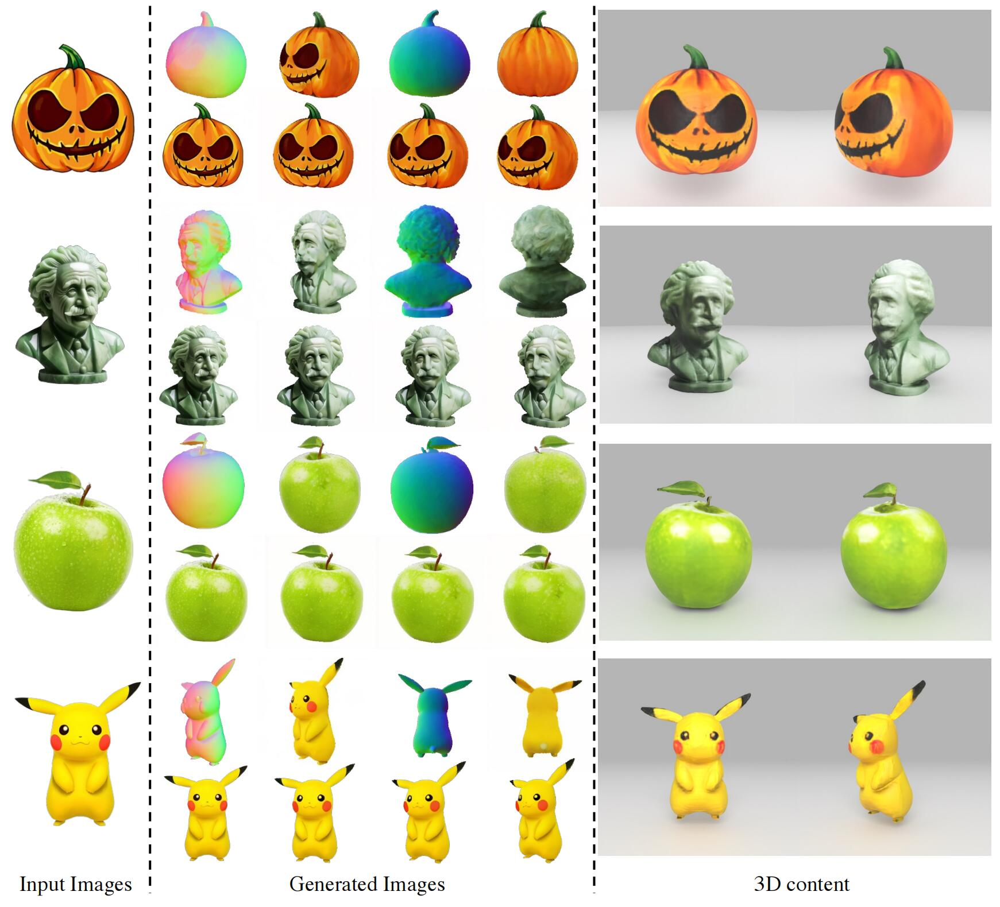
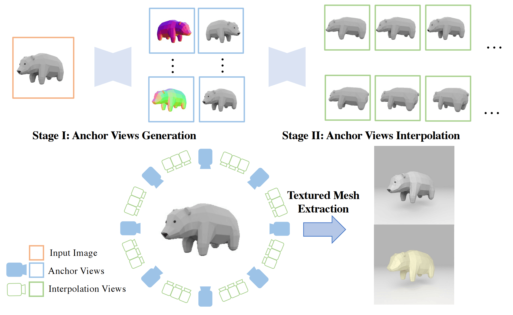
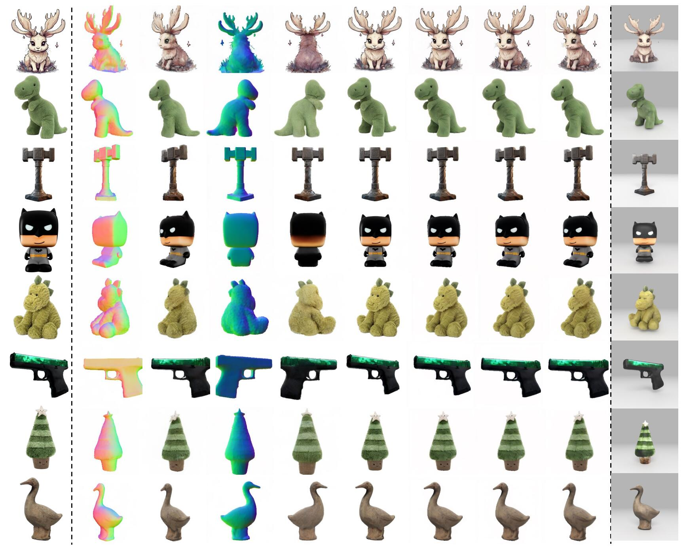
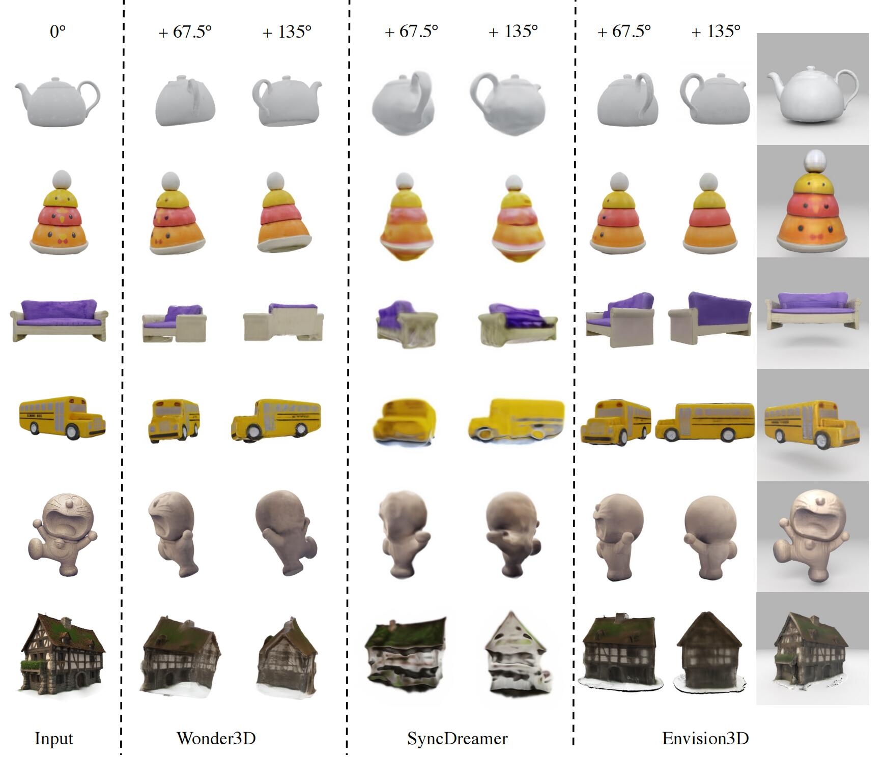
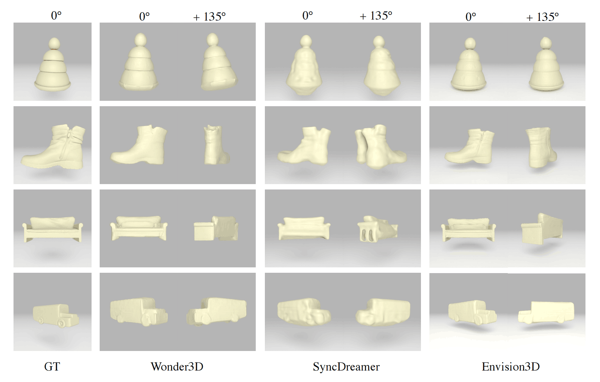

In this work, we present Envision3D, a novel method for efficiently generating high-quality 3D content from a single image. Recent methods that extract 3D content from multi-view images generated by diffusion models show great potential. However, it remains a challenge for diffusion models to efficiently learn the data distribution of dense multi-view consistent images, which have a crucial role in the quality of 3D extraction. To address this issue, we propose a cascade framework, in which two diffusion models are experts at generating images from designated views. In the first stage, we inject fine-grained conditions as instructions into the diffusion model to generate global semantic and geometric consistent anchor views. Subsequently, we propose to fine-tune video diffusion models conditioned on anchor views to interpolate and generate additional dense views. We further introduce a coarse-to-fine sampling strategy for the reconstruction algorithm to robustly generate high-quality textured meshes. Extensive experiments demonstrate that our method achieves a high quality of generated 3D content in terms of texture and geometry.

Envision3D generates dense views and extracts high-quality 3D content from one input image.

Given an input image, Stage I first generates aligned anchor view images with aligned normal maps. Then based on generated anchor view images, Stage II interpolates between anchor views to generate dense views. Finally, 3D content is generated through textured mesh extraction.


